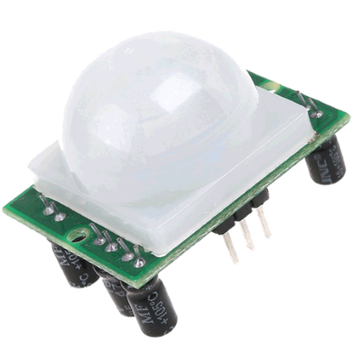

Apa itu Adaptive Mosque Fan?
Adaptive Mosque Fan merupakan sebuah kipas angin yang dapat berfungsi secara adaptif terhadap kondisi suhu tertentu dan dapat mendeteksi keberadaan obyek manusia yang berada di dalam Masjid. Adaptive Mosque Fanbekerja secara otomatis saat kipas mendeteksi adanya jamaah di dalam Masjid dan ketika suhu di dalam ruangan Masjid di atas 27°C. Sehingga, apabila kondisi masjid tidak sesuai dengan keadaan tersebut, maka kipas akan mati secara otomatis setelah beberapa menit tanpa perlu mematikannya secara manual. Dengan menggunakan kipas ini, pemborosan energi akibat kipas yang menyala saat tidak digunakan dapat dikurangi karena kipas ini hanya bekerja saat dibutuhkan saja. Oleh karena itu Adaptive Mosque Fan dapat menjadi solusi dalam permasalahan kipas angin konvesional yang biasanya di pasang di dalam Masjid.
Teknologi Apa Saja yang Digunakan?
ATMega16
ATMega16A merupakan sebuah CMOS 9-bit mikrokontroler berbasis AVR dengan arsitektur RISC. ATMega16A dapat mencapai sekitar kecepatan eksekusi 1 MIPS per Hz sehingga dapat mengoptimisasi konsumsi daya VS kecepatan pemroses.
Sensor PIR

Sensor PIR (Passive Infra Red merupakan sensor yang digunakan untuk mendeteksi adanya pancaran sinar infra merah dengan suhu tertentu dari suatu objek seperti manusia.
Sensor Suhu LM35
Sensor suhu LM35 adalah komponen elektronika yang memiliki fungsi untuk mengubah besaran suhu menjadi besaran listrik dalam bentuk tegangan. LM35 mempunyai keluaran impedansi yang rendah dan linieritas yang tinggi sehingga dapat dengan mudah dihubungkan dengan rangkaian kendali khusus serta tidak memerlukan penyetelan lanjutan.
Bagaimana Penerapannya?
Mikrokontroler ATMega16A digunakan untuk mengendalikan nyala atau matinya setiap kipas yang ada di dalam Masjid. Setiap kipas dipasang sebuah sensor suhu LM35 dan sensor PIR yang terhubung langsung dengan mikrokontroler.
Keuntungan yang Didapat
Adaptif
Adaptive Mosque Fan bekerja secara adaptif dengan mendeteksi suhu dan keberadaan jamaah di dalam Masjid
Hemat
Adaptive Mosque Fan dapat mengurangi pemborosan energi yang diakibatkan oleh pemakaian kipas yang tidak diperlukan
Futuristik
Masjid akan telihat lebih futuristik karena menerapkan sebuah teknologi yang belum pernah diterapkan pada masjid